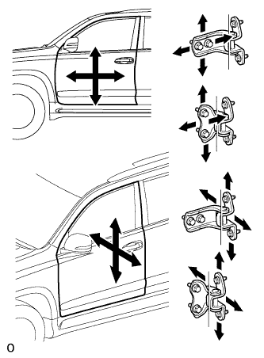

FRONT DOOR > ADJUSTMENT |
| 1. INSPECT FRONT DOOR |
Check that the clearance measurements of areas A through P are within the standard range.
| Area | Measurement | Area | Measurement |
| A | 3.60 to 6.60 mm (0.142 to 0.260 in.) | B | 6.50 to 9.50 mm (0.256 to 0.374 in.) |
| C | 3.70 to 6.70 mm (0.146 to 0.264 in.) | D | 3.70 to 6.70 mm (0.146 to 0.264 in.) |
| E | 3.70 to 6.70 mm (0.146 to 0.264 in.) | F | 4.60 to 7.60 mm (0.181 to 0.299 in.) |
| G | 2.5 to 6.5 mm (0.0984 to 0.256 in.) | H | -2.0 to 2.0 mm (-0.0787 to 0.0787 in.) |
| I | 3.0 to 6.0 mm (0.118 to 0.236 in.) | J | -1.5 to 1.5 mm (-0.0591 to 0.0591 in.) |
| K | 4.05 to 7.05 mm (0.159 to 0.278 in.) | L | 4.45 to 7.45 mm (0.175 to 0.293 in.) |
| M | 4.05 to 7.05 mm (0.159 to 0.278 in.) | N | 4.35 to 7.35 mm (0.171 to 0.289 in.) |
| O | 2.7 to 5.7 mm (0.106 to 0.224 in.) | P | -1.5 to 1.5 mm (-0.0591 to 0.0591 in.) |
| 2. DISCONNECT CABLE FROM NEGATIVE BATTERY TERMINAL |
| Condition | Waiting Time |
| Vehicle enrolled in G-BOOK system | 6 minutes |
| Vehicle not enrolled in G-BOOK system | 1 minute |
| 3. ADJUST FRONT DOOR |
|  |
Using SST, loosen the hinge bolts on the vehicle body and adjust the door position.
Tighten the hinge bolts on the vehicle body.
Loosen the hinge bolts on the door and adjust the door position.
Tighten the hinge bolts on the door.
 |
Using a T40 "TORX" socket wrench, slightly loosen the striker mounting screws.
Using a brass bar and hammer, hit the striker to adjust its position.
Using a T40 "TORX" socket wrench, tighten the striker mounting screws.
| 4. CONNECT CABLE TO NEGATIVE BATTERY TERMINAL |
| 5. CHECK SRS WARNING LIGHT |
Check the SRS warning light (Click here).